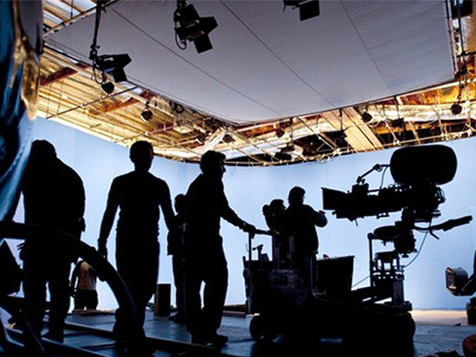
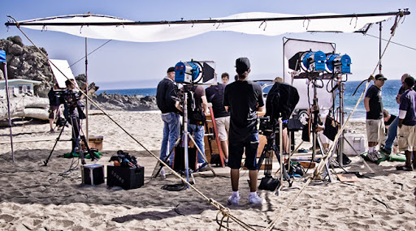

Hikayemiz

Kameran Buradan, 2012 yılında, fotoğrafçılığa duyulan tutkunun bir sonucu olarak kuruldu.
Kurucularımız, yılların deneyimiyle fotoğrafçılık sektöründe fark yaratmayı hedefledi. Bugün,
sektördeki yeniliklere öncülük eden, müşteri memnuniyetine önem veren bir marka olarak tanınmaktayız.
Kameran Buradan, profesyonel fotoğrafçılardan yeni başlayanlara kadar geniş bir kitleye hitap ediyor.
Vizyonumuz

Vizyonumuz, dünya çapında fotoğrafçılık ekipmanları alanında lider bir marka olmak ve müşterilerimize
en iyi deneyimi sunmaktır. İnovasyonu ve mükemmeliyeti odağımıza alarak, her fotoğrafçının yaratıcı
süreçlerinde güvenebileceği bir ortak olmayı hedefliyoruz.